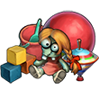
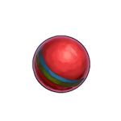
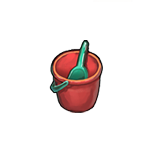
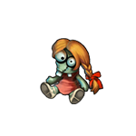
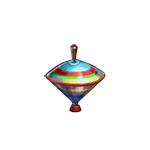

Получено: файл; исходный URL. Иллюстрация в отдельной статье ViveR_9 «Коллекция игрушек»; исходный файл без перекодирования. Авторство отдельно не установлено. Страница: источник.

Коллекция игрушек
ВКонтакте; дата источника не указана- Тип
- Коллекции
- Версия и дата
- ВКонтакте; дата источника не указана
Элементы коллекции













Данные по источнику · ВКонтакте · дата источника не указана
Предварительно: один источник; требует сверки. Требуется сверка.
- Награда
- Пружина и 400 опыта
- Где копать
- Замок, бригада Элвиса, клоун, медведи, ожившая рука, горгулья
- Состав (источник Zombie-island)
- Мяч; Кубики; Ведёрко; Кукла; Юла.
- Награда (источник Zombie-island)
- 1 Пружина; 400 Опыт.
- Где копать Коллекцию игрушек в Зомби Ферме лопатами
- Волшебный олень; Бригада Элвиса; Шалаш; Замок; Горгулья раз; Могила Z; Горгулья два; Ожившая рука; Клоун; Медвезомби; Медвед; Зомби-рок; Рука зомби; Аэроплан; Снежище; Кроль; Голуби; Дерево мира.
- Коллекцию игрушек можно выиграть в рулетке игрового автомата
- Яблочный автомат.
- Коллекция игрушек выпадает из ценностей, сокровищ и сундуков
- Связка бревен секвойи; Связка бревен пал.; Сундук Яблони; Сундук Чудовища; Бэйби-сюрприз; Ваза; Чаша; Груда чер. мрамора; Груда зел. мрамора; Груда бел. мрамора; Мистический; Шишка; Коллекционная посылка; Коллекционный; Коллекционер; Яблочный сюрприз; Веселая карусель; Цирковой шатер; Весенний фонтан; Икебана; День защиты детей; Сюрприз.
- Коллекцию игрушек можно привезти с Пиратских островов
- Пиратский сундук; Остров Сокровищ.
Данные по источнику · ВКонтакте, ZombieS Forever · дата редакции не установлена
Предварительно: Историческая фанатская страница; независимость от других источников не установлена. Возможны различия версий и дат.. Требуется сверка.
- Награда по ZombieS Forever
- Пружина и 400 опыта
- Места получения: выборка из источника
- Замок, бригада Элвиса, клоун, медвежонок и др.
Данные по источнику · браузерная версия; платформа не указана · дата редакции не установлена
Предварительно: Содержимое списка: изображения и колонки могут терять смысл при извлечении текста; отдельная страница и дата не проверены. Подписи alt иногда ошибочны.. Требуется сверка.
- Текст карточки из каталога
- Пружина и 400 опыта Мяч Кубики Ведёрко Кукла Юла Можно найти в сундуках после сбора Яблонь. Где лучше всего копается: Замок, Бригада Элвиса, Клоун, Медвежонок, Медвед, Ожившая рука, Горгулья Лилия
Данные по источнику · Мой Мир (Mail.ru); историческая таблица · дата редакции не установлена
Предварительно: Источник сам использует знаки вопроса; не следует считать такие места подтверждёнными. Возможны изменения патча и платформы; независимость от других справочников не доказана.. Требуется сверка.
- Название в источнике
- Коллекция игрушек
- Где копать
- Замок, Бригада Элвиса, Клоун, Медвежонок, Медвед, Ожившая рука, Горгулья
- Награда
- Пружина и 400 опыта
Данные по источнику · браузерная версия; на сайте указана игра ВКонтакте · дата редакции не установлена
Предварительно: Исторический текст; сильно совпадает со справкой Zommbie.at.ua, независимость не доказана. Отрицания и доступность могут измениться с патчем.. Требуется сверка.
- Где искать по странице «Зомбастики»
- Клоун, медвезомби, ожившая рука, красные лилии, голубые лилии, белые лилии, замок.
Данные по источнику · Браузерная версия ВКонтакте; редакция не установлена · 03.10.2018 — дата публикации; дата последующей редакции неизвестна
Предварительно: Прочитана фанатская страница; вероятность находки и точная редакция игры не указаны. Схожесть с другими справочниками не установлена; независимость не предполагается.. Требуется сверка.
- Состав
- Мяч; Кубики; Ведёрко; Кукла; Юла.
- Обмен
- 1 Пружина и 400 опыта.
- Получение
- Можно создать в Изумрудной вышке, выиграть в рулетке Яблочного автомата, получить в задании «Подружки»; источник перечисляет подарки и ценности, в том числе Сундук Чудовища и Коллекционную посылку.
- Где искать у друзей
- Шалаш, Цирк, Замок, Кино, Коллайдер, Флаг Марафонца, Планетарий, Дерево Мира, Медвежонок, Медвед, Клоун, Кроль, Горгулья раз и два, Рука зомби, Зомби-рок, Мастер урожая, Могила Z, Марафонец, Голуби, Весенняя ваза, Ожившая рука.
- Палочками
- Октавий, две Большие зимние ёлки, Пончик отважный, Почта Любви, Пасхальное яйцо, Подземный ресурс. Названия вариантов следует сверять.
Данные по источнику · историческая браузерная версия, платформа не указана · 10.01.2014 — дата в каталоге; дата редакции материала неизвестна
Предварительно: Фанатский список без вероятностей и уточнения площадки; независимость от других источников не установлена.. Требуется сверка.
- Где искать по списку сайта
- Клоун, медвезомби, ожившая рука, красные лилии, голубые лилии, белые лилии, замок
- Оговорка
- Список может относиться к разным условиям, инструментам и периодам игры; не доказывает гарантированное выпадение. Заявления «только» и «невозможно» относятся лишь к времени и версии источника.
Данные по источнику · историческая браузерная игра; площадка не уточнена · 26.02.2013 — дата каталога; редакция неизвестна
Предварительно: Проверен текст в каталоге сайта; вероятность выпадения не указана. Исторические версии и даты могут различаться; списки и награды требуют сверки, независимость сайта от других справочников не установлена.. Требуется сверка.
- Награда в источнике
- Пружина и 400 опыта
- Места в источнике
- Замок, бригада Элвиса, клоун, медвежонок, медвед, ожившая рука, горгулья, лилия. Даты адреса и каталога различаются.
Связанные сущности
нет проверенных связей — требуется сверка.
Источники
- прочитано; проверка 2026-11-21
- прочитано: Zombie-island.moy.su; проверка 2026-11-21
- ZOMBIA: прочитана карточка в списке
- Ссылка на отдельную страницу; отдельно не проверена
- Zombiemail: строка таблицы коллекций; Мой Мир
- Зомбастики: прочитана соответствующая строка; возможная копия другого справочника
- ViveR_9: отдельная статья коллекции
- zommbie.at.ua: где искать коллекции
- zombi-ferma.ucoz.net: каталог коллекций